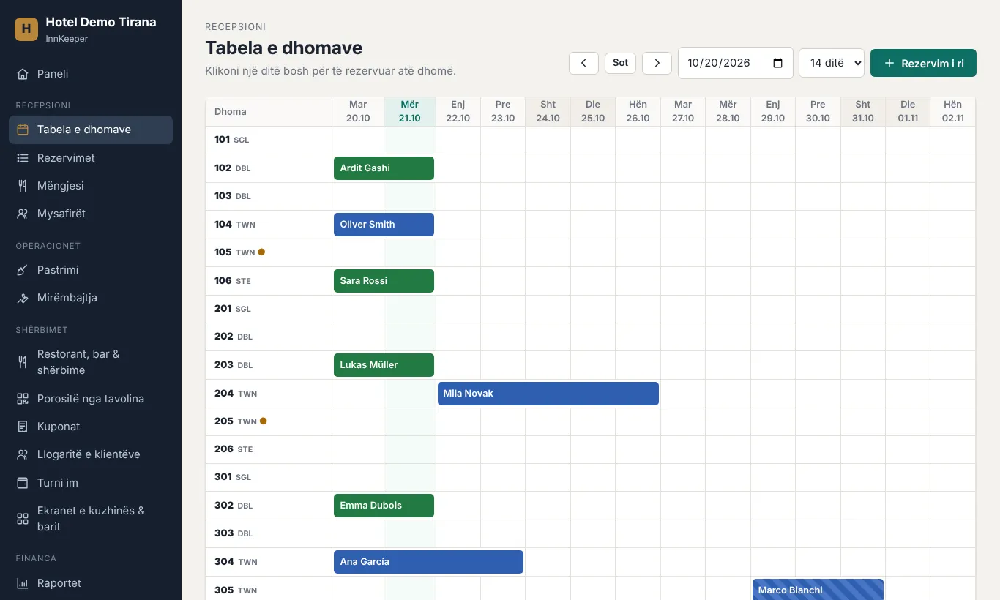
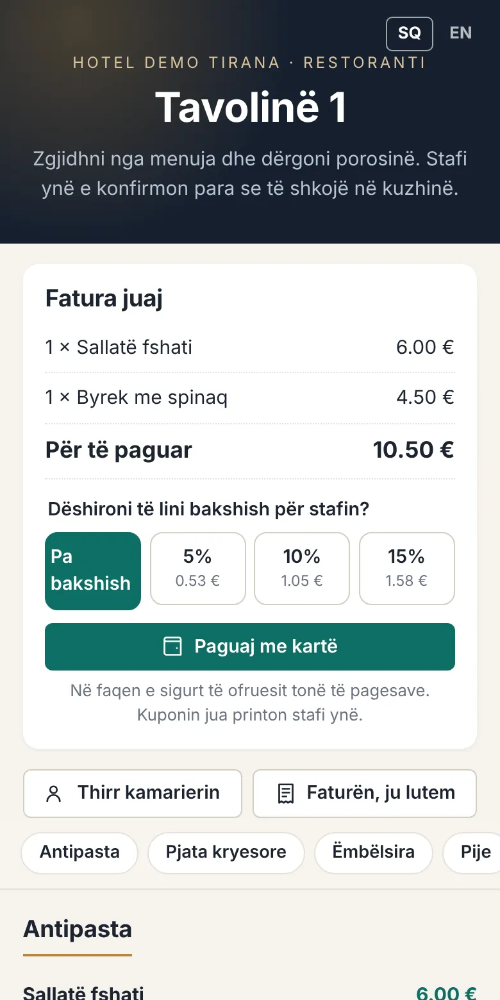
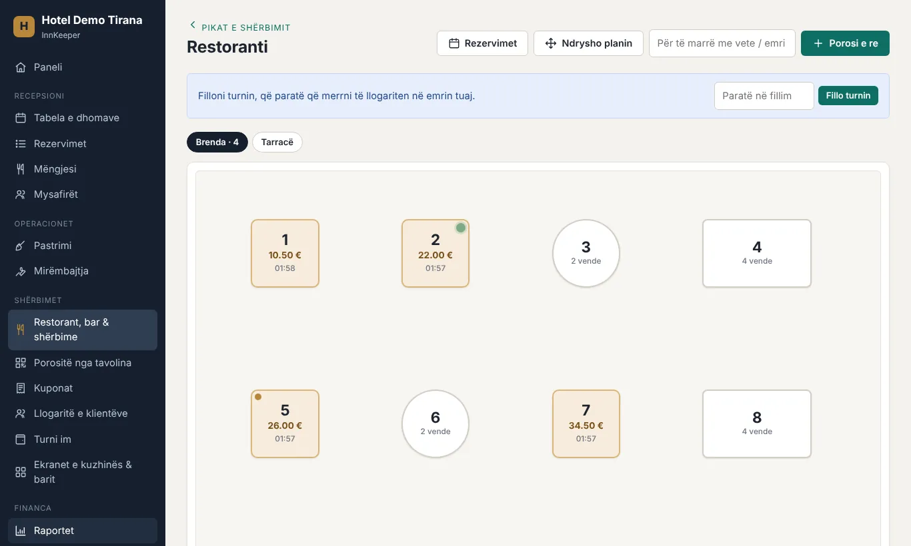
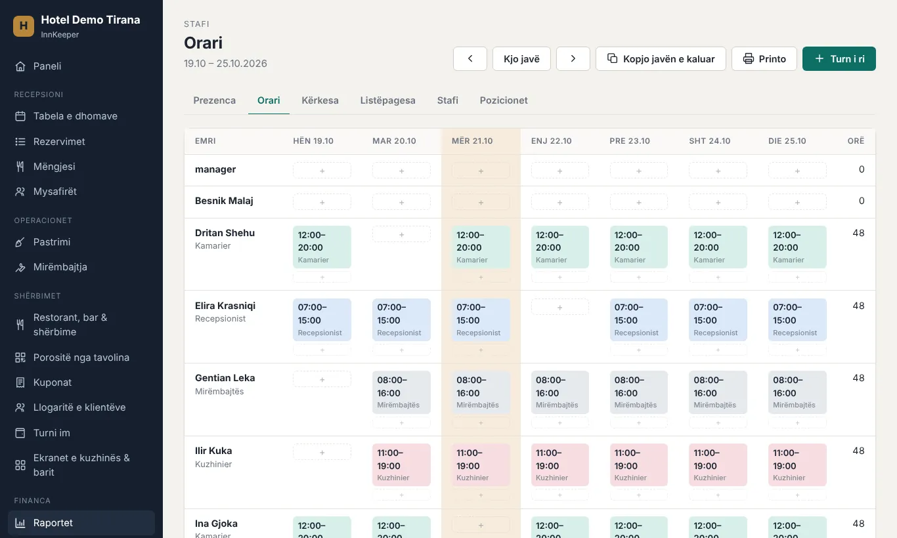
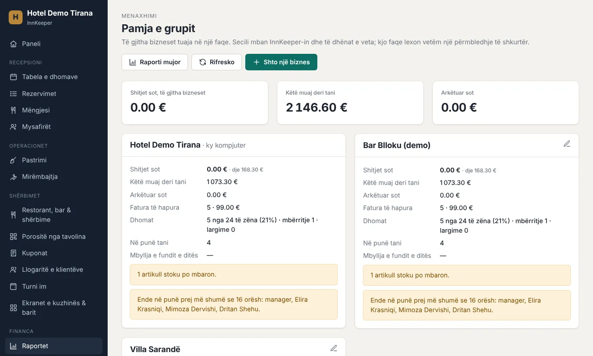

InnKeeper është një program falas për hotele, bujtina, restorante, bare dhe klube. Rezervimet, arka, kuzhina, stafi, fiskalizimi dhe raportet, të gjitha në një vend, në shqip dhe anglisht, në kompjuterin tuaj. InnKeeper is free software for hotels, guesthouses, restaurants, bars and clubs. Bookings, the till, the kitchen, staff, fiscal receipts and reports, all in one place, in Albanian and English, on your own computer.
Pa abonim, pa kartë krediti. Të dhënat mbeten te ju.No subscription, no credit card. Your data stays with you.


Aktivizoni vetëm pjesët që përdorni: vetëm dhomat, vetëm barin, ose të gjitha së bashku.Turn on only the parts you use: just rooms, just the bar, or everything together.
Tabela e dhomave, rezervimet online, check-in dhe check-out, faturat, mëngjesi, minibari dhe lidhja me Booking.com e kanale të tjera.Room rack, online booking, check-in and check-out, guest bills, breakfast, minibar, and sync with Booking.com and other channels.
Arka me ekran prekës, plani i sallës, ekranet e kuzhinës, porositë dhe pagesa me kod QR nga tavolina, happy hour.Touchscreen till, floor plan, kitchen screens, ordering and paying with a QR code at the table, happy hour.
Kuponat dhe faturat dërgohen në tatime (CIS), me NIVF dhe kod QR, edhe kur bie interneti.Receipts and invoices are sent to the tax authority (CIS) with an NIVF and a QR code, even when the internet is down.
Hyrja dhe dalja me PIN, orari javor, lejet, ndërrimet e turneve dhe pagat.Clocking in and out with a PIN, the weekly schedule, leave, shift swaps and payroll.
Mbyllja e ditës, raporti mujor për kontabilistin, stoku me receta, fitimi për çdo artikull.Day close, monthly report for the accountant, stock with recipes, profit per item.
Kontaktet e klientëve (me pëlqimin e tyre), ofertat me email, kartat e besnikërisë, kuponat dhuratë dhe mesazhet para mbërritjes.Guest contacts (with their consent), email offers, loyalty cards, gift vouchers and messages before arrival.
Kamarierët hapin tavolinën me një prekje, porositë shkojnë direkt në kuzhinë dhe në bar, dhe klientët mund të porosisin vetë nga telefoni i tyre.Waiters open a table with one tap, orders go straight to the kitchen and the bar, and guests can order from their own phones.

Kush është në punë, kush u vonua, sa orë punoi secili, dhe pagat e muajit gati për kontabilistin.Who is at work, who was late, how many hours everyone worked, and the month's pay ready for the accountant.

Çdo biznes mban të dhënat e veta; pronari i sheh të gjitha së bashku: shitjet, paratë, dhomat dhe paralajmërimet.Each business keeps its own data; the owner sees them all together: sales, money, rooms and warnings.

Nuk ju duhet server, as njohuri teknike.You don't need a server or any technical knowledge.
Një skedar i vetëm për Windows. Nëse Windows shfaq paralajmërim, zgjidhni “More info → Run anyway”.A single file for Windows. If Windows shows a warning, choose “More info → Run anyway”.
Emri i biznesit, dhomat ose menuja, stafi. Ose provojeni me një biznes shembull.Business name, rooms or menu, staff. Or try it with a sample business.
Tabletët dhe telefonat në të njëjtin Wi-Fi e hapin në shfletues duke skanuar një kod QR, pa instaluar asgjë. Kopjet rezervë bëhen automatikisht.Tablets and phones on the same Wi-Fi open it in their browser by scanning a QR code, with nothing to install. Backups happen automatically.
Shkarko InnKeeperDownload InnKeeper Udhëzimet e instalimitInstall guide
Po. Pa abonim dhe pa kufi përdoruesish. Kodi është i hapur (open source).Yes. No subscription and no user limit. It's open source.
Në kompjuterin tuaj, me kopje automatike në USB ose në cloud-in tuaj (Google Drive, OneDrive). Askush tjetër nuk ka qasje në to.On your own computer, with automatic copies to a USB drive or your own cloud (Google Drive, OneDrive). Nobody else has access to it.
Arkat vazhdojnë të punojnë. Kuponat fiskalë dërgohen kur kthehet interneti, brenda afatit ligjor.The tills keep working. Fiscal receipts are sent when the internet is back, within the legal deadline.
Po. Në fillim zgjidhni llojin e biznesit dhe do të shihni vetëm atë që ju duhet.Yes. Choose your type of business at the start, and you'll only see what you need.
Udhëzuesi është brenda programit (Ndihmë). Për probleme ose ide, shkruani këtu.The guide is inside the app (Help). For problems or ideas, let us know here.